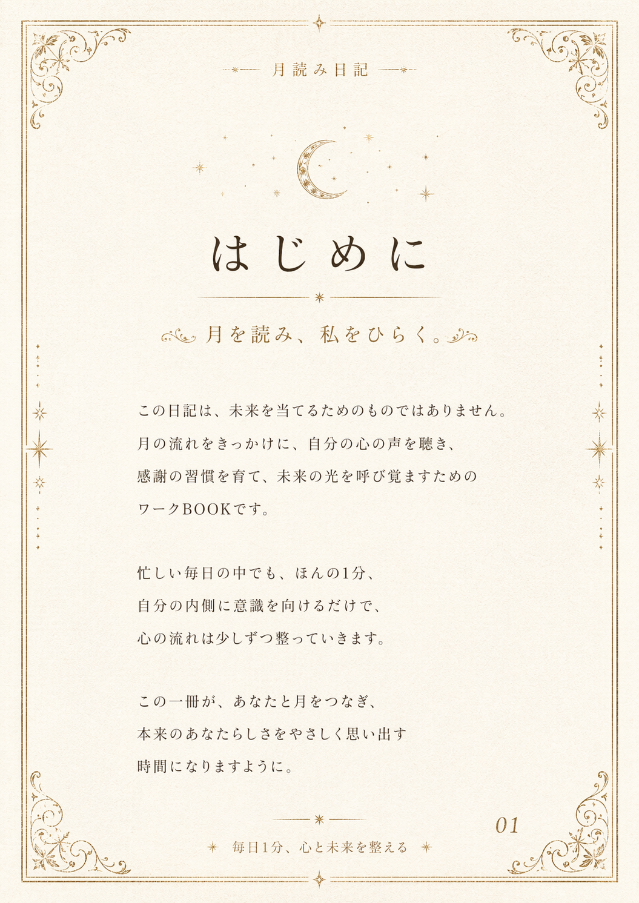

月の流れと日常アイテムに向き合い、心の本音をひらきながら、 あなたの中の月の種を育てていく7日間の書き込みワークBOOKです。

MOON WONDERLAND GUIDE
ここから、あなたの月読み日記が始まります
鑑定書で受け取った月の種を、7日間の小さな記録で育てていく流れです。 まずはDay1から、今日の心に残ったことを一文だけ残していきます。
MOON GATE NOTICE
6月15日（月）双子座新月から、扉が開きます。新月は、願いを始めるタイミングです。 双子座新月に願いをかけることで、コミュニケーション、学び、友情、夫婦関係の流れを整え、願いが叶いやすい流れを育てていきます。 6月15日から、月読み日記を一緒に始めましょう。
—＊— 月読み日記 —＊—
この日記の使い方
1日3分、月の種を育てる
1今日の月のテーマを読む今の月が照らしているテーマを、やさしく受け取ります。
2今日の整えアイテムを見つめる身近なモノに宿る働きや、支えてくれている力に気づきます。
3心の本音を一文で書くうまくまとめなくて大丈夫です。今の自分の声をそのまま残します。
4明日の私へ小さな一歩を渡す今日の気づきを、明日の行動へ静かにつなげます。
リアルタイム参加が一番楽しいですが、1日遅れても、2日遅れても大丈夫です。 完璧に続けることより、戻ってこられる場所があることを大切にしてください。